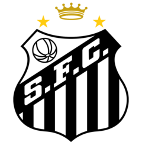
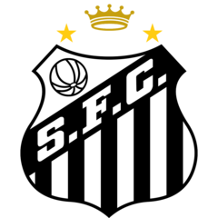

O Sport Club Corinthians Paulista, mais conhecido como Corinthians, foi fundado em 1º de setembro de 1910, por um grupo de operários em São Paulo. Inspirado em um clube inglês, o
Corinthian Football Club, a equipe começou suas atividades disputando amistosos e
rapidamente se destacou nas competições locais. O Corinthians conquistou seu primeiro
título, o Campeonato Paulista, em 1914, solidificando sua posição no cenário do futebol paulista.
A história do clube é marcada por grandes conquistas e momentos memoráveis. Entre os anos
1920 e 1930, o Corinthians se consolidou como uma das principais forças do futebol
brasileiro, atraindo uma enorme torcida, que hoje é considerada uma das maiores do mundo.
Em 1977, após 23 anos sem vencer o Campeonato Paulista, o clube conquistou o título,
quebrando um longo jejum e se tornando um símbolo de resiliência.
Nos anos 2000, o Corinthians passou por um processo de modernização, tanto em sua gestão
quanto em sua estrutura, e continuou a conquistar títulos importantes, como o Campeonato
Brasileiro e a Copa do Brasil. Em 2012, o clube alcançou o auge ao conquistar a Copa
Libertadores, um sonho que se concretizou após mais de 100 anos de história.
Curiosidades:
Fiel Torcida: O Corinthians é conhecido por sua torcida apaixonada, a "Fiel", que é
reconhecida por seu amor incondicional e apoio em todos os momentos, mesmo nas
adversidades.
Famoso Estádio:
O clube manda seus jogos na Arena Corinthians, inaugurada em 2014 para a
Copa do Mundo. A arena é um dos principais palcos do futebol brasileiro e já recebeu jogos
importantes, incluindo a final da Copa do Mundo FIFA 2014.
Futebol e Cultura:
O Corinthians não é apenas um clube de futebol, mas um fenômeno
cultural. O clube inspirou músicas, poemas e até mesmo um samba-enredo de escola de
samba, o que demonstra sua forte ligação com a cultura popular brasileira.
Rivalidades:
O Corinthians tem rivalidades históricas, especialmente com o Palmeiras, Santos
e São Paulo. Esses confrontos, conhecidos como "clássicos", são esperados com grande
expectativa pelos torcedores e sempre proporcionam jogos emocionantes
 
